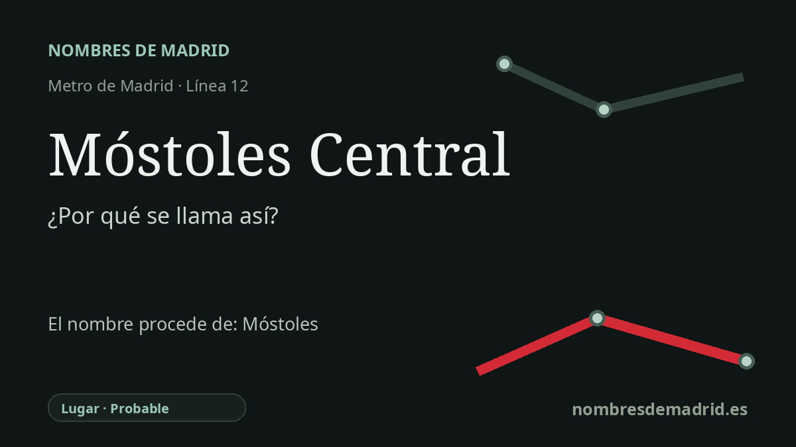

Publicado el · Investigación de Nombres de Madrid · Cómo verificamos cada origen · 8 fuentes consultadas
Respuesta rápida
Móstoles Central recibe su nombre por ser la estación central de Metro/Cercanías de Móstoles. El topónimo Móstoles es medieval e incierto, con una posible pero no definitiva relación con el latín monasterium o *monisteriis.
La historia del nombre
Móstoles Central recibe su nombre de la forma más directa posible: es la estación central de transporte de Móstoles. La parada pertenece a la línea 12 de Metro de Madrid, MetroSur, y el Ayuntamiento la enumera como estación con correspondencia con la línea C-5 de Cercanías. La palabra Central la diferencia así de otras estaciones mostoleñas y señala su función como principal intercambiador ferroviario de la ciudad.
El nombre más antiguo que hay detrás de la estación es el del propio municipio de Móstoles. Ese topónimo es medieval y no está resuelto por completo. Una explicación influyente lo relaciona con el latín monasterium, o con una forma plural locativa *monisteriis, con el sentido aproximado de 'en los monasterios'. Si fuera correcta, el nombre conservaría el recuerdo de un monasterio o basílica cristiana anterior al dominio islámico.
La documentación es más clara que la etimología. La página histórica del Ayuntamiento de Móstoles y un artículo académico que cita documentación medieval de la catedral de Segovia señalan octubre de 1144, cuando una concesión de Alfonso VII situó Freguezedos 'entre la torre de Monsteles y el camino que va de Madrid a Olmos'. Un deslinde posterior de 1208 también sitúa Móstoles en el paisaje fronterizo entre Segovia y Toledo. Esas formas, Monsteles y Mosteles, son importantes porque muestran el nombre en uso siglos antes de la grafía moderna.
La estación cuenta además una historia de transporte. MetroSur abrió el 11 de abril de 2003 como línea circular que enlazaba Alcorcón, Móstoles, Fuenlabrada, Getafe y Leganés, con varios intercambiadores con Cercanías. En Móstoles, la parada central integró la antigua estación ferroviaria en el anillo sur de Metro y ayudó a consolidar el nodo ferroviario urbano en torno al Paseo de la Estación y las calles céntricas cercanas.
La interpretación mejor respaldada es, por tanto, estratificada. La estación se llama así con seguridad por Móstoles y por su intercambiador central. El nombre de la ciudad está probablemente relacionado con las formas medievales Monsteles/Mosteles y quizá derive de una forma latina vinculada a monasterios, pero las fuentes no lo prueban de manera concluyente. La forma de Al-Idrisi citada a menudo como Mostel es un posible testimonio medieval, no una prueba de origen árabe; la explicación popular de 'mosto y aceite' es mucho más débil.